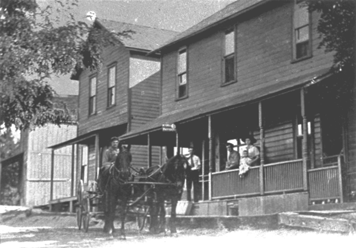
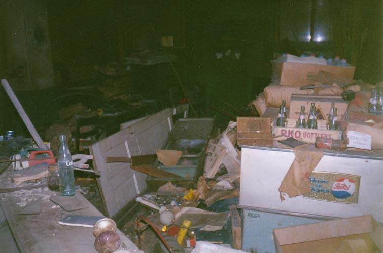

Located next to a still-occupied house in Congo is this abandoned building. At first we all believed that it was a store of some sort--maybe a general store. I found out later that the general store had stood across the street, and this was a bar called Stenson's. The house next door is close enough that I think it's safe to assume that they're related in some way--maybe the house's original residents ran the bar.

Above you can see a photo of Stenson's Bar in happier days. It served the hard drinking miners of the town from the nineteenth century through the 1980s, when it was forced to close.
When we got around behind the bar we found that the back had completely collapsed, leaving it wide open. Only one room still had a roof. Inside we found old display cases and some filthy, disintegrating auto parts boxes. This helped to fool us into thinking it was a store.

Not a huge abandoned building, but an interesting one. I wonder when the place first opened its doors. What made the Congo bar even more interesting was the building located at the top of the ridge above it. To explore that place, click here.